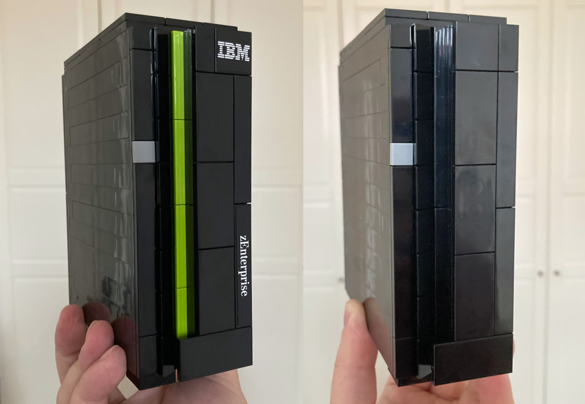

Lego Themed IT Sets Collection
During a GSE UK technical conference I was one of the lucky winner of an IBM z16 server Lego set.
However a year later IBM didn't bought the DS8A10 storage system's Lego model to the conference, meanwhile they used it as promotion on other events.
Because I know IBM created Lego models for previous Mainframe systems before, so that point I decided to collect building instructions for DS8A10, older IBM systems, and for other companies IT sets as well.
The older building instructions what IBM released don't include brick parts list (Element IDs for Lego's Pick a Brick service).
Also the IBM sets use printed bricks for IBM & product logos, which had to be subsitued with stickers. I have created those based on the old instructions and photos about the official sets.
Using the below instructions you can order the necessary bricks from Lego's Pick a Brick service, to build it by your own.
As well as print the necesarry stickers to make the set more charming.
IBM z16 and IBM LinuxONE 4 Mainframe server
The IBM z16 is the 16th generation of IBM Mainframe servers. The lego model represent the one frame configuration, with an opening door, and with a pull-out processor drawer.
The set comes with two color accents, blue for z16 (z/OS workload), and yellow for LinuxONE (TuX tasks). It builds up from 184 brick pcs, released in 2023.
Building instructions, bricklist included (copy of the original PDF document)
Stickers (subsitude originally printed bricks)
The z16 / LinuxONE set released by IBM, distributing the Lego blocks in a plastic bag, along with a QR code on a piece of paper, which point to the assemply instruction PDF.
IBM DS8A10 Storage System

The IBM DS8A00 is the 10th generation of IBM DS8K storage system, where DS8A10 represent the one frame configuration. It has no any moveable element, builds up from 112 brick pcs, released in 2024.
Building instructions (copy of the original PDF document)
Stickers (subsitude originally printed bricks)
The DS8A10 set released by IBM, distributing the Lego blocks in a plastic bag, along with a QR code on a piece of paper, which point to the assemply instruction PDF.
IBM z114 Mainframe Server

The IBM z114 Mainframe was part of 11th generation of IBM Mainframe servers. Meanwhile z196 focused to big organizations, the z114 made mainframe computing accessible to mid-sized ones. This set has no any moveable element, builds up from 143 brick pcs, released in ??.
Building instructions (scan of the original document)
Bricklist (not part of instruction leafet)
Stickers (subsitude originally printed bricks)
The z114 set released by IBM, the Lego blocks were distributed along with a small paper manual in a cardboard box. Thank you to Michael Grossmann for his support in acquiring an assembly manual.
Stay tuned
Following instructions release is in progress, their brick list & stickers creation is ongoing:
- IBM zBC12 server
- IBM z10EC server
- Dell Lego PowerStore (60 brick pcs, released in ??)
- Dell EMC Unity XT Storage Array + IDPA DP4400 (70 brick pcs, 2020)
- HPE Alltera Storage (95 brick pcs, 2023)
Looking for
Please let me know if you know about any unlisted IT themed Lego sets, and if you can share the building instruction that even better. :-)
For example, but not limited to:
- Cisco 7960 Lego Phone (?? brick pcs, released in 2024)
- Dell EMC PowerEdge Servers Lego (56 brick pcs, released in 2020)
- Dell PowerStore Prime (56 brick pcs,released in 2024)
- Dell AI Factory (66 brick pcs, released in ??)
- Dell VmWare Combination Safe (286 brick pcs, released in ??)
- Dell EMC VxRail Hyperconverged Infrastructure (63 brick pcs, released in ??)
- Dell EMC VxRail Hyperconverged Infrastructure (58 brick pcs, released in ??)
- Netflix Open Connect (120 brick pcs, 2021)
- Cisco Ciscan Figure (?? brick pcs, 2016?)
- Cisco Ironport D.I.Y. Email Security Kit (?? brick pcs, ??)
Disclaimer
The IBM logo and associated branding are the property of International Business Machines Corporation (IBM). The LEGO logo and associated branding are the property of the LEGO Group. The Dell logo and associated branding are the property of Dell Technologies Inc. The HPE logo and associated branding are the property of Hewlett Packard Enterprise. The VMware logo and associated branding are the property of VMware, Inc. The Cisco logo and associated branding are the property of Cisco Systems, Inc. The Netflix logo and associated branding are the property of Netflix, Inc.
This website is not affiliated with, endorsed by, or associated with IBM, the LEGO Group, Dell, HPE, VMware, Cisco, or Netflix in any way. It is created solely for entertainment purposes. All trademarks, logos, and images remain the property of their respective owners.
The commercial use of the provided materials, including but not limited to the sale of replicas, is strictly prohibited.
|